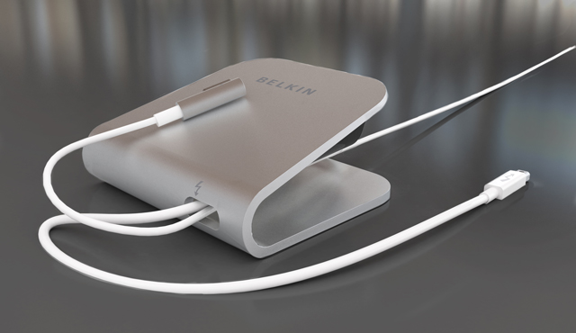

Belkin Outs The Thunderbolt Express Dock, A Multi-Port Adapter For All Your Docking Needs
This is great for taking my MacBook Air to work. I can dock it, and get extra ports without needing to own an Apple Display.